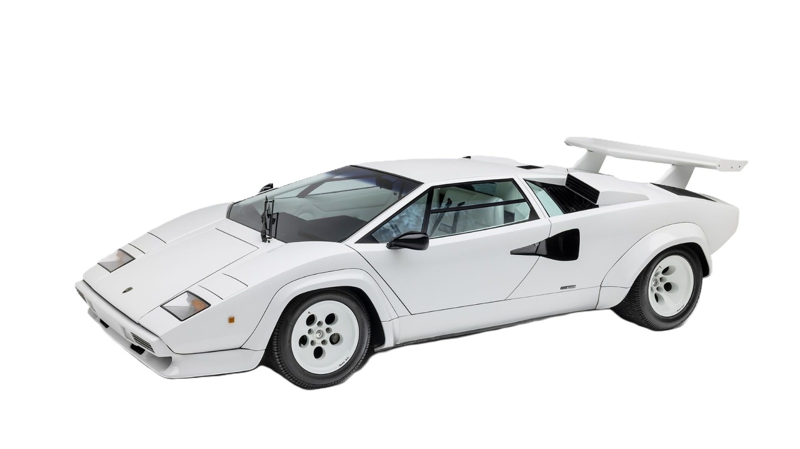

Lamborghini Cars Overview
Lamborghini Huracan
Engine:
5.2 L V10
Transmission:
7-speed dual-clutch transmission, officially called Lamborghini Doppia Frizione (LDF)
Fuel Type:
petrol
Body Type:
2-door coupe configuration
Mileage:
10.6 to 11.24 kmpl
View More

Lamborghini Countach
Engine:
3.9-liter V12 engine producing 375 PS (370 hp)
Transmission:
5-speed synchromesh manual
Fuel Type:
petrol/gasoline
Body Type:
wedge-shaped body
Mileage:
5-7.69 kmpl (kilometers per liter)
View More
Lamborghini Islero
Engine:
3.9-liter V12 engine
Transmission:
five-speed manual transmission
Fuel Type:
petrol (gasoline)
Body Type:
2+2 coupé
Mileage:
4-7 kmpl
View More
Lamborghini Urus
Engine:
4.0 L V8 Electric
Transmission:
8-speed automatic transmission
Fuel Type:
petrol (gasoline)
Body Type:
super SUV
Mileage:
7.8 kmpl
View More
Lamborghini Veneno
Engine:
6.5-liter naturally aspirated V12 engine
Transmission:
7-speed Independent Shifting Rods (ISR) automated manual transmission
Fuel Type:
petrol/gasoline
Body Type:
coupe and a roadster
Mileage:
7.69 kmpl
View More